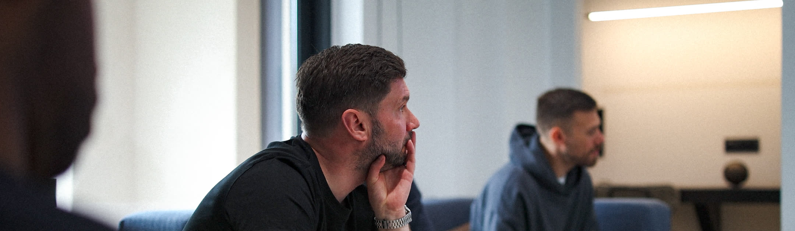
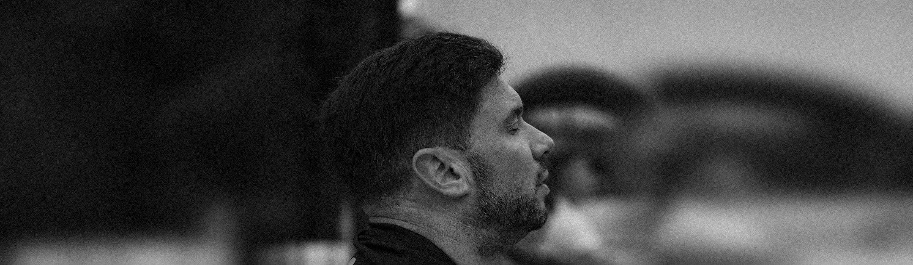

In Good Company.
Films and stills of the rooms Trade Winds brings together.
Hi Gary,
I've spent time with your brief and the notes from my calls with you and Steve. This is what came out of them.
You've built something people only really understand once they're in the room. These films are going to let founders take a seat before they apply.
The Table on the 22nd, then the river on the 23rd.
Charlie
No pitching, the quality of the room, honest conversation. Every networking group promises the same. Your brief puts it in three words: this isn't networking. Film is the only way a founder gets to experience what you're creating before applying.
The brand has to become bigger than you. The members carry the proof and you're the host who brings the room together.
Nothing is staged.
January is when founders reset their year so it's when they join things. The site, membership and film release together.
The tone is yours from the brief: warm, understated, established, premium without being pretentious.
From three years filming Heroic Man. A serious room on a wider scale, carried by its atmosphere. The closest thing to what you described.
The launch of a Berkshire men's club, told through the people in it.
Work we've already made together.
The main film plays at the top of the new site. The loops replace the placeholder imagery. The member stories and stills fill the member and About pages.
Beyond the site, the films go out on your LinkedIn, the Trade Winds page and Instagram. They go in the event previews and emails too. You can also send them to applicants before they speak to you, or to experience partners.
Steve at Clever Little Design and I have already met, so the brand and the film pull the same way. I shoot to the brand direction: place over polish, real moments, nothing facing the camera.
We agree the shot list before the 22nd, mapped to the new site. There are no posed portraits. The people come from real moments and interview stills. Whoever builds the site in December builds it from real footage instead of stock.
Guests are told before the night that the first half hour is being filmed. No audio is recorded at the table. Releases are signed on arrival. Anyone who'd rather not be on camera sits out of shot or books the Table on 26 November instead.
Then the camera leaves. Chatham House starts when the camera leaves.
Member interviews cover their own experience only, never what anyone else said.

Both use the same dates. Both include planning alongside the brand work, a shot list mapped to the new site and the Table filmed the Chatham House way.
£2,750 on Greenlight, £2,750 on delivery.
£3,000 on Greenlight, £3,000 at the end of November, £3,000 on delivery.
Everything in the Launch Film, plus:
Pay by bank transfer or card, whichever's easier.
The Launch Film gets Trade Winds live. The Founding Quarter makes it look like it's been here for years.
Priced separately, the Founding Quarter comes to £12,000: the main film £3,500, three member films £2,250, loops £1,250, photography £1,750, the launch stack £2,000 and creative direction alongside the brand £1,250. Together they're £9,000.
The launch stack is twelve posts for LinkedIn and Instagram across January. Each video is repurposed for social with subtitles in the brand typeface and a designed cover. Carousels come as images. A running order covers the dates and which three to pin. The captions are yours, in your own words. I'll give you a short title and a steer for each post. Posting, scheduling, replying and paid promotion aren't included.
From January, Trade Winds runs a calendar of rooms across two regions. A monthly partnership would capture them as they happen, with Run your business like you'll sell it as a recurring series of real conversations with owners. The Porsche event and the expert briefings can be filmed as their own pieces once they're dated.
The footage and stills stay with Trade Winds as a library for 2027.
This holds until 12pm on Friday 16 October, so the guests at the 22 October Table can be told in good time and the walk can be locked.
Deposit invoice is on its way and the 22nd is in the calendar.